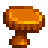
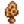
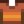

Chanterelle
Jump to navigation
Jump to search
| Chanterelle | |||||||||||||||||
 |
|||||||||||||||||
| A tasty mushroom with a fruity smell and slightly peppery flavor. | |||||||||||||||||
| Information | |||||||||||||||||
| Source | Foraging • The Farm Cave • Mushroom Log | ||||||||||||||||
| Location | Secret Woods • Ginger Island Mushroom Cave | ||||||||||||||||
| Season | |||||||||||||||||
| XP |
|
||||||||||||||||
| Energy / Health |
|
||||||||||||||||
| Sell Price |
|
||||||||||||||||
|
|||||||||||||||||
The Chanterelle is found via foraging in the Secret Woods in the Fall, grown in The Farm Cave if the Mushroom option is chosen, or produced by a Mushroom Log. It may also be found in the Ginger Island Mushroom Cave.
Gifting
| Villager Reactions
| |
|---|---|
| Like | |
| Neutral | |
| Dislike | |
Bundles
Chanterelle is not used in any bundles.
Recipes
| Image | Name | Description | Ingredients | Energy / Health | Recipe Source(s) | Sell Price |
|---|---|---|---|---|---|---|
| Life Elixir | Restores health to full. |  Morel (1) Chanterelle (1) |
Tailoring
Chanterelle is used in the spool of the Sewing Machine with Cloth in the feed to create an 
Quests
Chanterelle is not used in any quests.
History
- 1.4: Can now be used in Tailoring.
- 1.5: Can be found in the Ginger Island mushroom cave.
- 1.6: Can now be produced by a Mushroom Log. Now considered orange instead of brown for dyeing. Now liked by Maru. Can now be made into Pickles. Mushrooms from the Farm Cave now give 5 Foraging XP each.
| Foraging | |
|---|---|
| Basic | Sap |
| Spring | Common Mushroom • Daffodil • Dandelion • Leek • Morel • Salmonberry • Spring Onion • Wild Horseradish |
| Summer | Fiddlehead Fern • Grape • Red Mushroom • Spice Berry • Sweet Pea |
| Fall | Blackberry • Chanterelle • Common Mushroom • Hazelnut • Wild Plum |
| Winter | Crocus • Crystal Fruit • Holly • Snow Yam • Winter Root |
| The Beach | Clam • Cockle • Coral • Mussel • Nautilus Shell • Oyster • Rainbow Shell • Sea Urchin • Seaweed |
| The Mines | Cave Carrot • Purple Mushroom • Red Mushroom |
| The Desert | Cactus Fruit • Coconut |
| Skull Cavern | Dinosaur Egg • Fiddlehead Fern |
| Ginger Island | Ginger • Magma Cap |